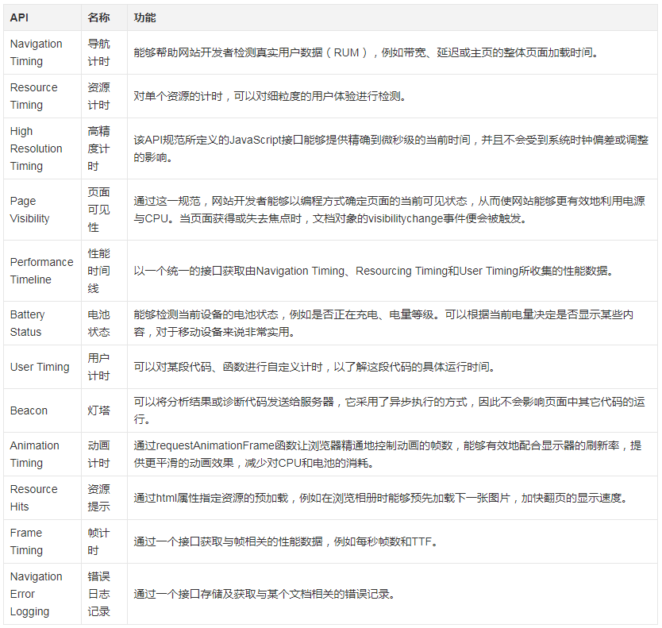

Web 动画帧率（FPS）计算（转载）
前言
我们知道，动画其实是由一帧一帧的图像构成的。有 Web 动画那么就会存在该动画在播放运行时的帧率。而帧率在不同设备不同情况下又是不一样的。
有的时候，一些复杂或者重要动画，我们需要实时监控它们的帧率，或者说是需要知道它们在不同设备的运行状况，从而更好的优化它们。
内容
- 流畅动画的标准
- 法一：借助 Chrome 开发者工具
- 法二：借助 Frame Timing API
- 法三：借助 requestAnimationFrame API
一、流畅动画的标准
首先，理清一些概念。FPS 表示的是每秒钟画面更新次数。我们平时所看到的连续画面都是由一幅幅静止画面组成的，每幅画面称为一帧，FPS 是描述“帧”变化速度的物理量。
理论上说，FPS 越高，动画会越流畅，目前大多数设备的屏刷新率为 60 次/秒，所以通常来讲 FPS 为 60 frame/s 时动画效果最好，也就是每帧的消耗时间为 16.67ms。
当然，经常玩 FPS 游戏的朋友肯定知道，吃鸡/CSGO 等 FPS 游戏推荐使用 144HZ 刷新率的显示器，144Hz 显示器特指每秒的刷新率达到 144Hz 的显示器。相较于普通显示器每秒 60 的刷新速度，画面显示更加流畅。因此 144Hz 显示器比较适用于视角时常保持高速运动的第一人称射击游戏。 不过，这个只是显示器提供的高刷新率特性，对于我们 Web 动画而言，是否支持还要看浏览器，而大多数浏览器刷新率为 60 次/秒。
直观感受，不同帧率的体验：
- 帧率能够达到 50~60FPS 的动画将会相当流畅，让人倍感舒适；
- 帧率能够达到 30~50FPS 之间的动画，因各人敏感程度不同，舒适度因人而异；
- 帧率在 30FPS 以下的动画，让人感觉到明显的卡顿和不适感；
- 帧率波动很大的动画，亦会使人感觉到卡顿；
二、法一：借助 Chrome 开发者工具
Chrome 提供给开发者的功能十分强大，在开发者工具中，我们进行如下选择调出 FPS meter 选项：
通过这个按钮，可以开启页面实时 Frame Rate(帧率)观测及页面 GPU 使用率。
缺点
但是这个方法缺点太多了
- 这个只能一次观测一到几个页面，而且需要人工实时观测
- 数据只能是主观感受，并没有一个十分精确的数据不断上报或者被收集
三、法二：借助 Frame Timing API
3.1 Blink 内核早期架构
以 Chrome 浏览器内核 Blink 渲染页面为例。对早期的 Chrome 浏览器而言，每个页面 Tab 对应一个独立的 renderer 进程，Renderer 进程中包含了主线程和合成线程。早期 Chrome 内核架构：

其中，主线程主要负责：
- Javascript 的计算与执行
- CSS 样式计算
- Layout 计算
- 将页面元素绘制成位图（paint），也就是光栅化（Raster）
- 将位图给合成线程
合成线程则主要负责：
- 将位图以纹理的形式上传给 GPU
- 计算页面的可见部分和即将可见部分（滚动）
- CSS 动画处理
- 通知 GPU 绘制位图到屏幕上
3.2 JS 动画与 CSS 动画的细微区别
- 对于 JS 动画而言，它们运行时的帧率即是主线程和合成线程加起来消耗的时间。对于流畅动画而言，我们希望它们每一帧的耗时保持在 16.67ms 之内；
- 而对于 CSS 动画而言，由于其流程不受主线程的影响，所以希望得到合成线程的消耗的时间，而合成线程的绘制频率也反映了滚动和 CSS 动画的流程性。
上面主要想得出的一个结论是。如果我们能够知道主线程和合成线程每一帧消耗的时间，那么我们就能大致得出对应的 Web 动画的帧率。那么上面说到的 Frame Timing API 是否可以帮助我们拿到这个时间点呢。
3.3 什么是 Frame Timing API ？
Frame Timing API 是 Web Performance Timing API 标准中的其中一位成员。
Web Performance Timing API是 W3C 推出的一套性能 API 标准，用于帮助开发者对网站各方面的性能进行精确的分析与控制，提升 Web 网站性能。
它包含许多子类 API，完成不同的功能，大致如下

怎么使用呢？以Navigation Timing, Performance Timeline, Resource Timing为例子，对于兼容它的浏览器，它以只读属性的形式对外暴露挂载在 window.performance上。
在调试台 console 中打印window.performance ，查看其中的 timing 属性：

它表示我们页面整个加载过程中每一个重要的时间点，可以详细看看这张图：

通过这张图以及上面的window.performance.timing，我们就可以轻松的统计出页面每个重要节点的耗时，这就是 Web Performance Timing API 的强大之处，感兴趣的可以详细去研究研究，使用在页面统计上。
3.4 Frame Timing API 示意
借助 Web Performance Timing API 中的 Frame Timing API，可以轻松的拿到每一帧中，主线程以及合成线程的时间。或者更加容易，直接拿到每一帧的耗时。
获取 Render 主线程和合成线程的记录，每条记录包含的信息基本如下，代码示意：
var rendererEvents = window.performance.getEntriesByType("renderer");
var compositeThreadEvents = window.performance.getEntriesByType("composite");
2
或者是：
var observer = new PerformanceObserver(function(list) {
var perfEntries = list.getEntries();
for (var i = 0; i < perfEntries.length; i++) {
console.log("frame: ", perfEntries[i]);
}
});
// subscribe to Frame Timing
observer.observe({entryTypes: ['frame']});
2
3
4
5
6
7
8
9
每条记录包含的信息基本如下：
{
sourceFrameNumber: 120,
startTime: 1342.549374253
cpuTime: 6.454313323
}
2
3
4
5
每个记录都包括唯一的 Frame Number、Frame 开始时间以及 cpuTime 时间。通过计算每一条记录的 startTime，我们就可以算出每两帧间的间隔，从而得到动画的帧率是否能够达到 60FPS。
不过！看看 Web Performance Timing API 整体的兼容性：
四、法三：借助 requestAnimationFrame API
费了这么多笔墨描述 Frame Timing API 但最后因为兼容性问题完全没办法使用。不过不代表这么长篇幅的描述没有用，从上面的介绍，我们得知，如果我们可以得到每一帧中的固定一个时间点，那么两者相减，也能够近似得到一帧所消耗的时间。
那么，我们再另辟蹊径。这次，我们借助兼容性不错的 requestAnimationFrame API。
window.requestAnimationFrame(callback);
requestAnimationFrame大家应该都不陌生，方法告诉浏览器您希望执行动画并请求浏览器调用指定的函数在下一次之前更新动画。
当你准备好更新屏幕画面时你就应用此方法。这会要求你的动画函数在浏览器下次重绘前执行。回调的次数常是每秒 60 次，大多数浏览器通常匹配 W3C 所建议的刷新率。
4.1 使用 requestAnimationFrame 计算 FPS 原理
原理是，正常而言 requestAnimationFrame 这个方法在一秒内会执行 60 次，也就是不掉帧的情况下。假设动画在时间 A 开始执行，在时间 B 结束，耗时 x ms。而中间 requestAnimationFrame 一共执行了 n 次，则此段动画的帧率大致为：n/(B-A)。
核心代码如下，能近似计算每秒页面帧率，以及我们额外记录一个 allFrameCount，用于记录 rAF 的执行次数，用于计算每次动画的帧率：
var rAF = function () {
return (
window.requestAnimationFrame ||
window.webkitRequestAnimationFrame ||
function (callback) {
window.setTimeout(callback, 1000 / 60);
}
);
}();
var frame = 0;
var allFrameCount = 0;
var lastTime = Date.now();
var lastFameTime = Date.now();
var loop = function () {
var now = Date.now();
var fs = (now - lastFameTime);
var fps = Math.round(1000 / fs);
lastFameTime = now;
// 不置 0，在动画的开头及结尾记录此值的差值算出 FPS
allFrameCount++;
frame++;
if (now > 1000 + lastTime) {
var fps = Math.round((frame * 1000) / (now - lastTime));
console.log(`${new Date()} 1S内 FPS：`, fps);
frame = 0;
lastTime = now;
};
rAF(loop);
}
loop();
2
3
4
5
6
7
8
9
10
11
12
13
14
15
16
17
18
19
20
21
22
23
24
25
26
27
28
29
30
31
32
33
34
35
36
OK，寻找一个有动画不断运行的页面进行测试，可以看到代码运行如下：
这里，我使用了我之前制作的一个页面进行了测试，使用 Chrome 同时调出页面的 FPS meter，对比两边的实时 FPS 值，基本吻合。
测试页面，Solar System。你可以将上面的代码贴到这个页面的 console 中，测试一下数据：

对比右上角的 Frame Rate，帧率基本一致。在大部分情况下，这种方法可以很好的得出 Web 动画的帧率。
如果我们需要统计某个特定动画过程的帧率，只需要在动画开始和结尾两处分别记录 allFrameCount 这个数值大小，再除以中间消耗的时间，也可以得出特定动画过程的 FPS 值。
值得注意的是，这个方法计算的结果和真实的帧率肯定是存在误差的，因为它是将每两次主线程执行 javascript 的时间间隔当成一帧，而非上面说的主线程加合成线程所消耗的时间为一帧。但是对于现阶段而言，算是一种可取的方法。
参考资料
联系作者
平凡世界，贵在坚持。